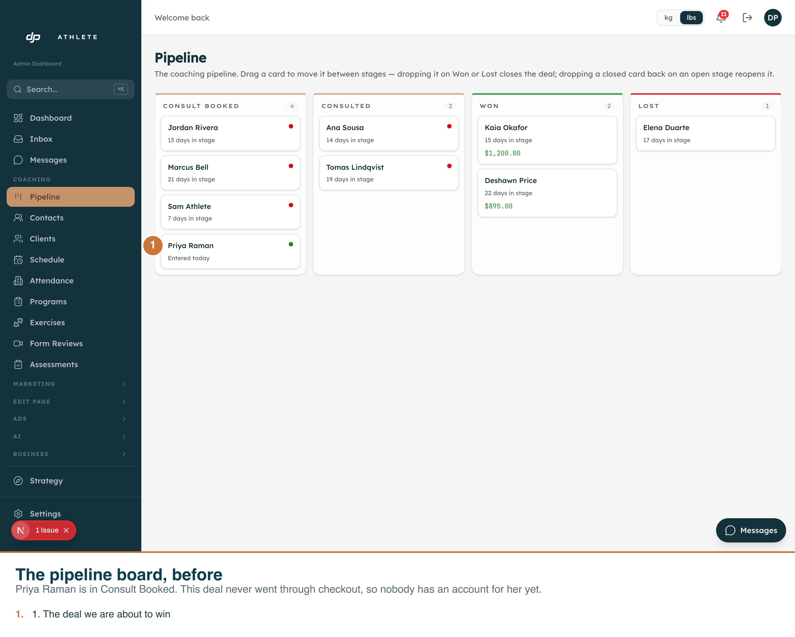
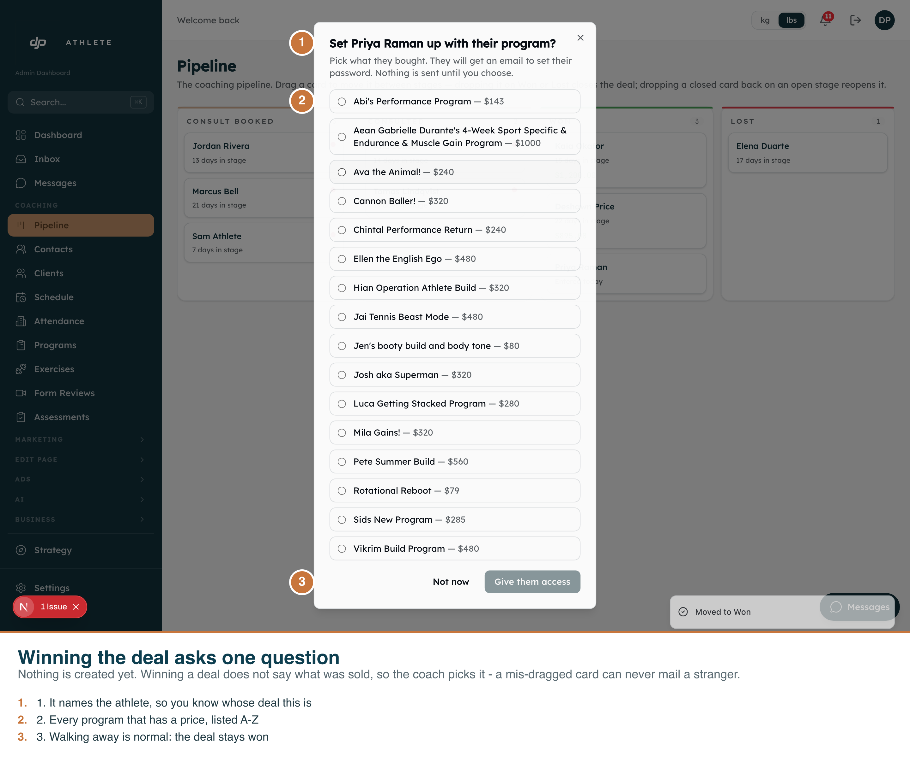

Captured 2026-09-01 from the real app at /admin/pipeline, driven with Playwright against the dev clone. Annotations are burned into the PNGs.
source_session_id = null, so it exercises the grant branch. A card that reached Won
through checkout is refused by design — it is already provisioned — and picking one of those would
have quietly demonstrated the other branch with nothing on screen looking wrong.


| Assertion | Result |
|---|---|
| The card is on the real board | pass |
| Dropping on Won opens the prompt | pass |
| The prompt names the athlete | pass — "Set Priya Raman up with their program?" |
| The picker offers priced programs only | pass — 16 offered, matching the 16 priced rows on the clone |
| The clone is left as it was found | pass — card restored to Consult Booked, verified by read-back |
The first take's caption claimed the picker shows "priced products only — never another athlete's own plan". That was false, and only looking at the image caught it. The list is full of names: Abi's Performance Program, Jen's booty build and body tone, Josh aka Superman.
Checking the data settled it: of the 18 priced programs on production, exactly one
(Rotational Reboot) is a catalogue product. The other seventeen are bespoke plans named
after the athlete they were built for, each with its own Stripe subscription or one-time price.
That is the business — so a person's name in this list is correct, not a leak, and the
filter (stripe_price_id IS NOT NULL) is doing the right job: it drops the 50 unpriced
drafts and templates nobody has ever sold.
The real hazard is therefore picking the wrong athlete's plan out of eighteen similar names. That is a case for a search box in the picker. Noted, not built — it is a product decision, not a bug.
The run stops at the prompt and never clicks Give them access. That would create a real
account and attempt a real invite email. The granting itself is covered by
__tests__/lib/funnels/checkout/grant-manual.test.ts — 10 tests, 4 mutants run and
killed.
Reproduce: npm run dev, then
APP=http://localhost:3050 npx tsx scripts/capture-won-deal-grant.ts .env.local.
The harness refuses to run against anything but the dev clone.